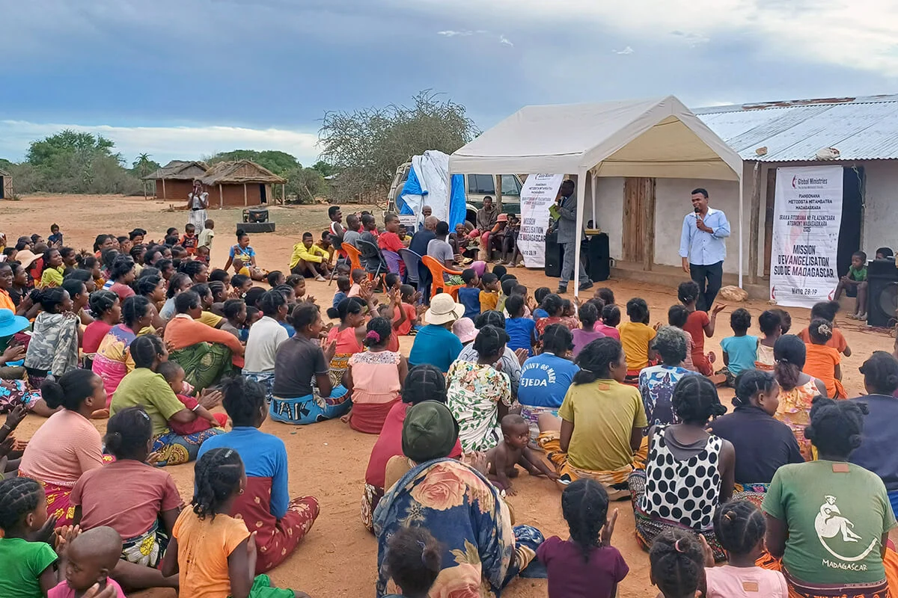
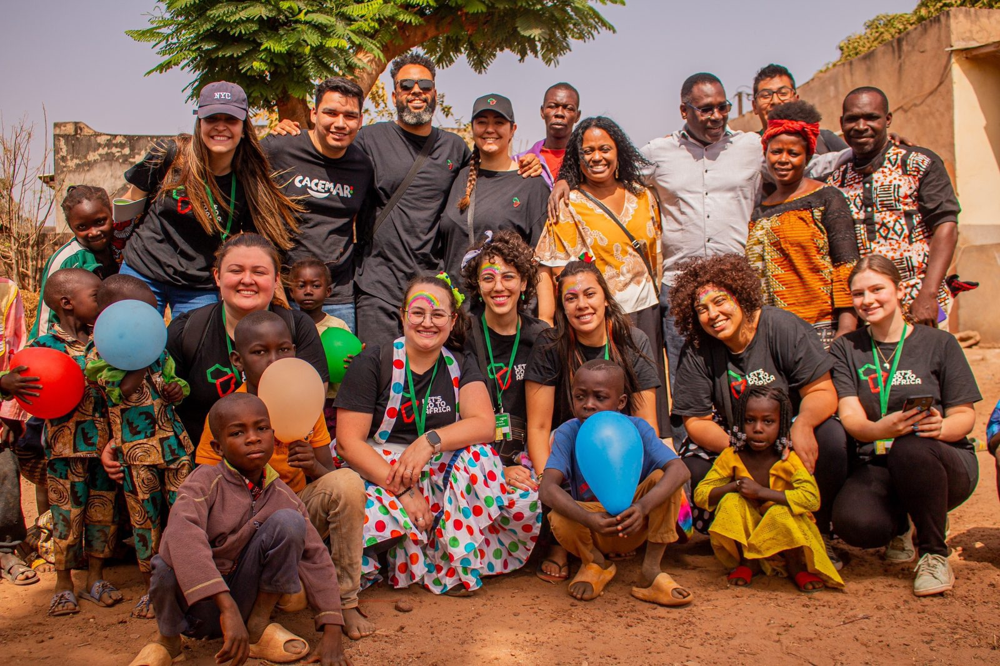
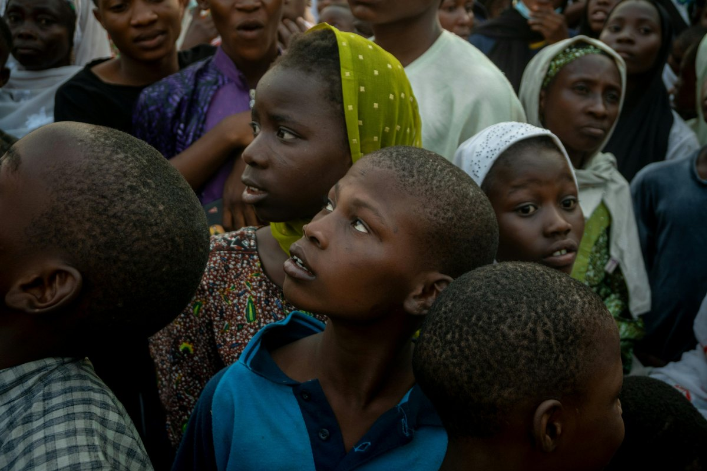

Missão África
Conheça o trabalho de casais e famílias que atuam em comunidades africanas por meio de ações missionárias.
Casais e Famílias
A missão África é formada por casais e famílias que trabalham em conjunto com igrejas e líderes locais para desenvolver ações de evangelização e cuidado comunitário.
O projeto reúne diferentes famílias missionárias, cada uma contribuindo com seus dons, experiências e habilidades.
Informações do projeto
- Equipe: Casais e famílias missionárias
- Faixa etária: 28 a 48 anos
- Atuação: Evangelização e apoio comunitário
- Local: Comunidades africanas
- Início do projeto: 2020
- Formato: Trabalho em equipe com líderes locais

Uma missão além das fronteiras
O projeto África surgiu do desejo de apoiar comunidades que enfrentam desafios sociais e possuem poucas oportunidades de acesso a ações cristãs e comunitárias.
Casais e famílias se revezam em atividades de ensino, visitas, encontros de oração, ações com crianças e apoio às igrejas locais.
O trabalho é desenvolvido respeitando a cultura, os costumes e a realidade de cada comunidade, sempre buscando construir relacionamentos duradouros.
Galeria de fotos



Faça parte dessa missão
Você também pode contribuir com esse projeto por meio da oração, participação e apoio às ações missionárias.